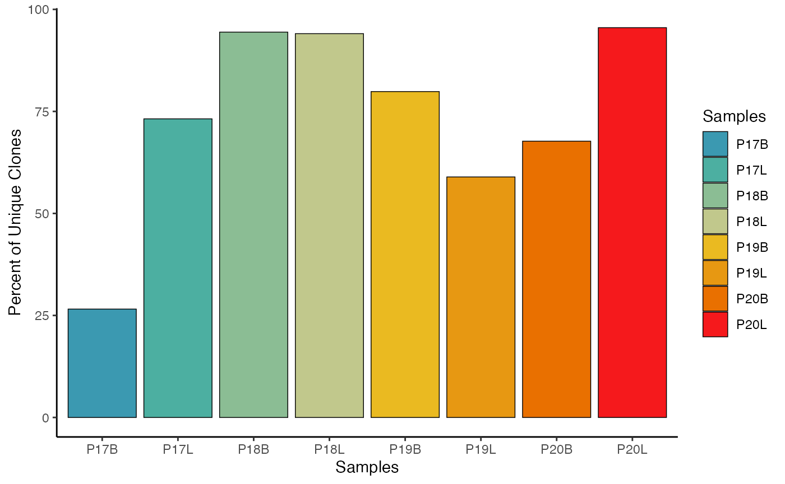
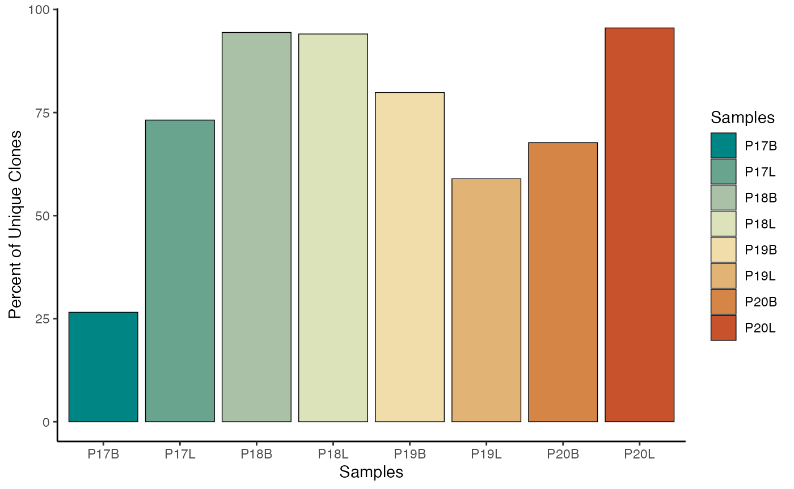
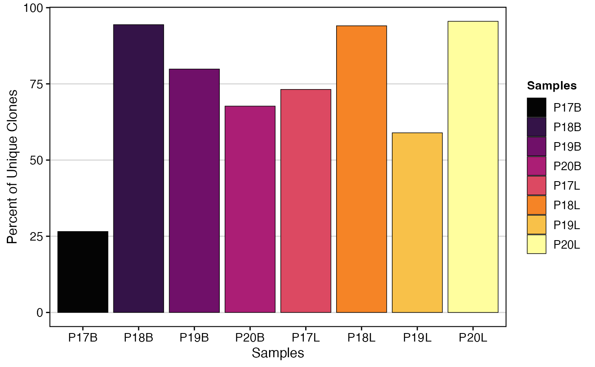

Barcode Mismatch
Depending on the pipeline used to generate the single-cell object,
there may be inherent mismatches in the barcodes in the single-cell
object and the output of combineBCR() or
combineTCR().
Common Barcode Modification Examples
Seurat-modified barcodes: By default, Seurat will append _X to the suffix of the barcodes.
original: ACGTACGTACGTACGT-1seurat-modified: ACGTACGTACGTACGT-1_1
scRepertoire-modified barcodes:
scRepertoire uses the samples and/or ID parameters in
combineTCR() or combineBCR() to add a prefix
to the barcodes.
original: ACGTACGTACGTACGT-1scRepertoire-modified: Sample1_ACGTACGTACGTACGT-1
Solution: Renaming Cell Barcodes in Seurat
The easiest way to make these compatible is to rename the cell
barcodes in the Seurat object using RenameCells() from the
SeuratObject package
# Assuming 'seuratObj' is your Seurat object
cell.barcodes <- rownames(seuratObj[[]])
# removing the _1 at the end of the barcodes (adjust regex if your suffix differs)
cell.barcodes <- stringr::str_split(cell.barcodes, "_", simplify = TRUE)[,1]
# adding the prefix of the orig.ident to the barcodes, assuming that is the sample IDs
cell.barcodes <- paste0(seuratObj$orig.ident, "_", cell.barcodes)
seuratObj <- RenameCells(seuratObj, new.names = cell.barcodes)Adjusting Color Palettes
For all visualizations in scRepertoire, you have two
primary ways to adjust the color scheme.
Methods for Color Adjustment
-
Internal Palette Selection: Change the
paletteparameter withinscRepertoirefunctions to the desired color scheme. This approach uses the built-in palettes ofgrDevices, and you can access the list of available color schemes usinghcl.pals(). -
Adding a ggplot Layer: Extend the
scRepertoireplot (which is a ggplot object) by adding aggplot2layer with a new color scheme usingscale_fill_manual()or similar functions.
Using Internal Palette Selection
# Internal Palette Selection
clonalQuant(combined.TCR,
cloneCall="strict",
chain = "both",
scale = TRUE,
palette = "Zissou 1")
Using ggplot2 System:
# Using gg System
clonalQuant(combined.TCR,
cloneCall="strict",
chain = "both",
scale = TRUE) +
scale_fill_manual(values = hcl.colors(8,"geyser"))
Adjusting Plot Theme
Since scRepertoire functions return ggplot
objects, modifying the general appearance or theme of the plot is
straightforward, similar to adjusting color palettes—by adding a
ggplot2 theme layer.
# Original clonalQuant plot
clonalQuant(combined.TCR,
cloneCall="strict",
chain = "both",
scale = TRUE)
# Modifying the theme of the clonalQuant plot
clonalQuant(combined.TCR,
cloneCall="strict",
chain = "both",
scale = TRUE) +
theme_classic()
Adjusting Order of Plotting
The order of grouping/group.by variables in scRepertoire
plots (whether along an axis or in color legends) can be precisely
controlled using the order.by parameter.
Key Parameter for Plot Order
-
order.by: A character vector defining the desired order of elements for thegroup.byvariable. It’s crucial that the strings in this vector exactly match thegroup.bystrings. Alternatively, settingorder.by = "alphanumeric"will automatically sort groups alphanumerically.
clonalQuant(combined.TCR,
cloneCall="strict",
chain = "both",
scale = TRUE,
order.by = c("P17B","P18B","P19B","P20B","P17L","P18L","P19L","P20L"))
Getting Data Used in Plots
Within each of the general analysis functions in
scRepertoire, there’s an option to export the underlying
data frame used to create the visualization.
Key Parameter for Data Export
-
exportTable: Set this parameter toTRUEto return the data frame used to generate the graph instead of the visual output.
clonalQuant_output <- clonalQuant(combined.TCR,
cloneCall="strict",
scale = TRUE,
exportTable = TRUE)
clonalQuant_output## contigs values total scaled
## 1 745 P17B 2805 26.55971
## 2 2117 P17L 2893 73.17663
## 3 1254 P18B 1328 94.42771
## 4 1202 P18L 1278 94.05321
## 5 5544 P19B 6942 79.86171
## 6 1619 P19L 2747 58.93702
## 7 6087 P20B 8991 67.70103
## 8 192 P20L 201 95.52239Citing scRepertoire
When using scRepertoire in your research, please cite
the appropriate version of the package.
Citation Details
- Version 2: Yang, Q, & Safina, K., Nguyen, K., Tuong, Z.K., & Borcherding, N. (2025). “scRepertoire 2: Enhanced and efficient toolkit for single-cell immune profiling.” PLoS Computational Biology https://doi.org/10.1371/journal.pcbi.1012760
- Version 1: Borcherding, Nicholas, Nicholas L. Bormann, and Gloria Kraus. “scRepertoire: An R-based toolkit for single-cell immune receptor analysis.” F1000Research https://doi.org/10.12688/f1000research.22139.2
Bug Reports/New Features
Your feedback is valuable for improving scRepertoire! If you encounter a bug or have a suggestion for a new feature, please report it.
Submit a GitHub issue - if possible please include a reproducible example. Alternatively, an example with the internal scRep_example and contig_list would be extremely helpful.
Helpful Articles
- Installation Instructions - Getting scRepertoire installed.
- Loading Data - Loading contig data from various formats.
- Basic Clonal Visualizations - Plot customization and visualization options.
- Visualizations for Single-Cell Objects - Overlaying clonal data on embeddings.